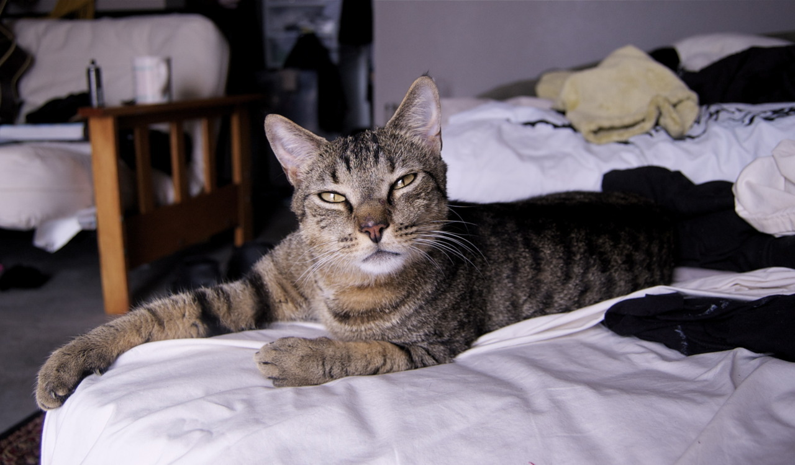

แมว หรือคำสุภาพว่า วิฬาร์ หรือ วิฬาร (ชื่อวิทยาศาสตร์: Felis catus) เป็นสปีชีส์สัตว์เลี้ยงของสัตว์เลี้ยงลูกด้วยนมกินเนื้อขนาดเล็ก โดยเป็นแมวสปีชีส์เดียวในวงศ์เสือและแมว ที่ถูกปรับเป็นสัตว์เลี้ยง และมักเรียกเป็น แมวบ้าน เพื่อแยกมันจากสมาชิกที่อยู่ในป่า แมวเหล่านี้สามารถอาศัยเป็นแมวบ้าน, แมวฟาร์ม หรือแมวจรได้ แต่แมวประเภทหลังสุดมักอาศัยอยู่อย่างอิสระและหลีกเลี่ยงการติดต่อกับมนุษย์ มนุษย์ให้ค่ากับแมวบ้านในฐานะคู่หูและความสามารถในการฆ่าสัตว์ฟันแทะ สำนักจดทะเบียนแมว (cat registries) หลายแห่งยอมรับสายพันธุ์แมวประมาณ 60 สายพันธุ์